suppressPackageStartupMessages({
library(readxl)
library(gtsummary)
library(reshape2)
library(tidyr)
library(officer)
library(flextable)
library(ggeffects)
library(ggplot2)
library(dplyr)
library(ordinal)
library(VGAM)
library(texreg)
library(psych)
})
load("data/digital_distraction_data.RData")Preventing Digital Distractions in Secondary Classrooms: A Quasi-Experimental Study
The website contains outputs and code used to analyze numeric and ordinal data in Park et al. (in press). Reproducible materials are also posted at the Center for Open Science and Github.
Park, J., Paxtle-Granjeno, J., Ok, M. W., Shin, M., & Wilson, E. (in press). Preventing digital distraction in secondary classrooms: A quasi-experimental study. Computers & Education
Code
selected_data <- data %>% select(student, group, time, AI1:ER4)
long_data <- melt(selected_data, id.vars = c('student', 'group', 'time'), variable.name = 'question', value.name = 'response')
table <- long_data %>%
mutate(time = case_when(
time == "0" ~ "Pre-test",
time == "1" ~ "Post-test"
)) %>%
mutate(time = factor(time, levels = c("Pre-test", "Post-test"))) %>%
mutate(group = case_when(
group == "0" ~ "Control",
group == "1" ~ "Treatment"
)) %>%
group_by(question, group, time, response) %>%
summarise(Count = n(), .groups = 'drop') %>%
group_by(question, group, time) %>%
mutate(Percentage = Count / sum(Count) * 100) %>%
mutate(Freq_Percent = paste0(Count, " (", round(Percentage, 1), "%)")) %>%
select(-Count, -Percentage) %>%
pivot_wider(names_from = response, values_from = Freq_Percent, values_fill = list(Freq_Percent = "0 (0%)")) %>%
ungroup()
table_flex <- table %>%
flextable() %>%
merge_v(j = ~ question) %>%
merge_v(j = ~ group) %>%
theme_vanilla() %>%
autofit()table_flexquestion | group | time | 1 | 2 | 3 | 4 | 5 |
|---|---|---|---|---|---|---|---|
AI1 | Control | Pre-test | 5 (11.1%) | 8 (17.8%) | 11 (24.4%) | 16 (35.6%) | 5 (11.1%) |
Post-test | 8 (17.8%) | 6 (13.3%) | 10 (22.2%) | 17 (37.8%) | 4 (8.9%) | ||
Treatment | Pre-test | 2 (4.3%) | 5 (10.9%) | 15 (32.6%) | 16 (34.8%) | 8 (17.4%) | |
Post-test | 5 (10.9%) | 10 (21.7%) | 16 (34.8%) | 8 (17.4%) | 7 (15.2%) | ||
AI2 | Control | Pre-test | 8 (17.8%) | 14 (31.1%) | 11 (24.4%) | 8 (17.8%) | 4 (8.9%) |
Post-test | 8 (17.8%) | 12 (26.7%) | 12 (26.7%) | 10 (22.2%) | 3 (6.7%) | ||
Treatment | Pre-test | 3 (6.5%) | 7 (15.2%) | 11 (23.9%) | 17 (37%) | 8 (17.4%) | |
Post-test | 1 (2.2%) | 12 (26.1%) | 22 (47.8%) | 8 (17.4%) | 3 (6.5%) | ||
AI3 | Control | Pre-test | 16 (35.6%) | 16 (35.6%) | 4 (8.9%) | 6 (13.3%) | 3 (6.7%) |
Post-test | 19 (42.2%) | 10 (22.2%) | 10 (22.2%) | 5 (11.1%) | 1 (2.2%) | ||
Treatment | Pre-test | 8 (17.4%) | 19 (41.3%) | 13 (28.3%) | 3 (6.5%) | 3 (6.5%) | |
Post-test | 10 (21.7%) | 13 (28.3%) | 13 (28.3%) | 8 (17.4%) | 2 (4.3%) | ||
AI4 | Control | Pre-test | 21 (46.7%) | 11 (24.4%) | 3 (6.7%) | 6 (13.3%) | 4 (8.9%) |
Post-test | 19 (42.2%) | 8 (17.8%) | 8 (17.8%) | 6 (13.3%) | 4 (8.9%) | ||
Treatment | Pre-test | 21 (45.7%) | 15 (32.6%) | 5 (10.9%) | 4 (8.7%) | 1 (2.2%) | |
Post-test | 19 (41.3%) | 9 (19.6%) | 10 (21.7%) | 8 (17.4%) | 0 (0%) | ||
AI5 | Control | Pre-test | 14 (31.1%) | 16 (35.6%) | 7 (15.6%) | 5 (11.1%) | 3 (6.7%) |
Post-test | 14 (31.1%) | 10 (22.2%) | 11 (24.4%) | 8 (17.8%) | 2 (4.4%) | ||
Treatment | Pre-test | 8 (17.4%) | 15 (32.6%) | 15 (32.6%) | 5 (10.9%) | 3 (6.5%) | |
Post-test | 7 (15.2%) | 17 (37%) | 16 (34.8%) | 6 (13%) | 0 (0%) | ||
OV1 | Control | Pre-test | 21 (46.7%) | 6 (13.3%) | 7 (15.6%) | 6 (13.3%) | 5 (11.1%) |
Post-test | 20 (44.4%) | 6 (13.3%) | 10 (22.2%) | 8 (17.8%) | 1 (2.2%) | ||
Treatment | Pre-test | 15 (32.6%) | 14 (30.4%) | 5 (10.9%) | 9 (19.6%) | 3 (6.5%) | |
Post-test | 12 (26.1%) | 12 (26.1%) | 13 (28.3%) | 3 (6.5%) | 6 (13%) | ||
OV2 | Control | Pre-test | 17 (37.8%) | 11 (24.4%) | 7 (15.6%) | 5 (11.1%) | 5 (11.1%) |
Post-test | 15 (33.3%) | 8 (17.8%) | 11 (24.4%) | 8 (17.8%) | 3 (6.7%) | ||
Treatment | Pre-test | 12 (26.1%) | 12 (26.1%) | 10 (21.7%) | 11 (23.9%) | 1 (2.2%) | |
Post-test | 7 (15.2%) | 10 (21.7%) | 18 (39.1%) | 8 (17.4%) | 3 (6.5%) | ||
OV3 | Control | Pre-test | 37 (82.2%) | 5 (11.1%) | 1 (2.2%) | 2 (4.4%) | 0 (0%) |
Post-test | 37 (82.2%) | 5 (11.1%) | 3 (6.7%) | 0 (0%) | 0 (0%) | ||
Treatment | Pre-test | 35 (76.1%) | 6 (13%) | 1 (2.2%) | 2 (4.3%) | 2 (4.3%) | |
Post-test | 32 (69.6%) | 4 (8.7%) | 6 (13%) | 4 (8.7%) | 0 (0%) | ||
MT1 | Control | Pre-test | 11 (24.4%) | 14 (31.1%) | 9 (20%) | 6 (13.3%) | 5 (11.1%) |
Post-test | 9 (20%) | 15 (33.3%) | 8 (17.8%) | 7 (15.6%) | 6 (13.3%) | ||
Treatment | Pre-test | 7 (15.2%) | 14 (30.4%) | 13 (28.3%) | 8 (17.4%) | 4 (8.7%) | |
Post-test | 12 (26.1%) | 10 (21.7%) | 12 (26.1%) | 11 (23.9%) | 1 (2.2%) | ||
MT2 | Control | Pre-test | 8 (17.8%) | 2 (4.4%) | 8 (17.8%) | 17 (37.8%) | 10 (22.2%) |
Post-test | 4 (8.9%) | 7 (15.6%) | 8 (17.8%) | 16 (35.6%) | 10 (22.2%) | ||
Treatment | Pre-test | 4 (8.7%) | 7 (15.2%) | 17 (37%) | 12 (26.1%) | 6 (13%) | |
Post-test | 3 (6.5%) | 7 (15.2%) | 15 (32.6%) | 15 (32.6%) | 6 (13%) | ||
MT3 | Control | Pre-test | 14 (31.1%) | 11 (24.4%) | 8 (17.8%) | 4 (8.9%) | 8 (17.8%) |
Post-test | 8 (17.8%) | 8 (17.8%) | 12 (26.7%) | 14 (31.1%) | 3 (6.7%) | ||
Treatment | Pre-test | 11 (23.9%) | 12 (26.1%) | 9 (19.6%) | 9 (19.6%) | 5 (10.9%) | |
Post-test | 11 (23.9%) | 4 (8.7%) | 17 (37%) | 10 (21.7%) | 4 (8.7%) | ||
MT4 | Control | Pre-test | 8 (17.8%) | 7 (15.6%) | 13 (28.9%) | 8 (17.8%) | 9 (20%) |
Post-test | 4 (8.9%) | 12 (26.7%) | 15 (33.3%) | 8 (17.8%) | 6 (13.3%) | ||
Treatment | Pre-test | 6 (13%) | 11 (23.9%) | 16 (34.8%) | 10 (21.7%) | 3 (6.5%) | |
Post-test | 1 (2.2%) | 11 (23.9%) | 16 (34.8%) | 16 (34.8%) | 2 (4.3%) | ||
ER1 | Control | Pre-test | 7 (15.6%) | 3 (6.7%) | 12 (26.7%) | 13 (28.9%) | 10 (22.2%) |
Post-test | 9 (20%) | 8 (17.8%) | 6 (13.3%) | 10 (22.2%) | 12 (26.7%) | ||
Treatment | Pre-test | 7 (15.2%) | 7 (15.2%) | 12 (26.1%) | 13 (28.3%) | 7 (15.2%) | |
Post-test | 7 (15.2%) | 7 (15.2%) | 15 (32.6%) | 12 (26.1%) | 5 (10.9%) | ||
ER2 | Control | Pre-test | 11 (24.4%) | 8 (17.8%) | 9 (20%) | 6 (13.3%) | 11 (24.4%) |
Post-test | 12 (26.7%) | 6 (13.3%) | 8 (17.8%) | 10 (22.2%) | 9 (20%) | ||
Treatment | Pre-test | 9 (19.6%) | 9 (19.6%) | 7 (15.2%) | 13 (28.3%) | 8 (17.4%) | |
Post-test | 10 (21.7%) | 5 (10.9%) | 13 (28.3%) | 11 (23.9%) | 7 (15.2%) | ||
ER3 | Control | Pre-test | 7 (15.6%) | 9 (20%) | 5 (11.1%) | 14 (31.1%) | 10 (22.2%) |
Post-test | 8 (17.8%) | 7 (15.6%) | 8 (17.8%) | 16 (35.6%) | 6 (13.3%) | ||
Treatment | Pre-test | 8 (17.4%) | 7 (15.2%) | 9 (19.6%) | 17 (37%) | 5 (10.9%) | |
Post-test | 4 (8.7%) | 7 (15.2%) | 15 (32.6%) | 14 (30.4%) | 6 (13%) | ||
ER4 | Control | Pre-test | 13 (28.9%) | 5 (11.1%) | 11 (24.4%) | 10 (22.2%) | 6 (13.3%) |
Post-test | 8 (17.8%) | 7 (15.6%) | 8 (17.8%) | 11 (24.4%) | 11 (24.4%) | ||
Treatment | Pre-test | 7 (15.2%) | 7 (15.2%) | 8 (17.4%) | 12 (26.1%) | 12 (26.1%) | |
Post-test | 5 (10.9%) | 3 (6.5%) | 14 (30.4%) | 14 (30.4%) | 10 (21.7%) |
Preprocess data
Code
data <- data %>%
mutate(D3_cat = case_when(
D3 == "Less than 10 minutes" ~ "1",
D3 == "10-20 minutes" ~ "2",
D3 == "20-30 minutes" ~ "3",
D3 == "30-40 minutes" ~ "4",
D3 == "More than 40 minutes" ~ "5"
))
data <- data %>% mutate(across(c(D3_cat, AI1:ER4), as.factor))Estimated Minutes of Digital Distractions
Code
main.D3_cat <- clmm(D3_cat ~ group + time + group:time +
(1 | student), data = data, Hess=TRUE, nAGQ=7) Code
reverse_thresholds <- function(data) {
sum <- summary(data)
cf <- as.data.frame(sum$coefficients)
cf[1:4, 1] <- cf[1:4, 1] * -1
cf[1:4, 3] <- cf[1:4, 3] * -1
rownames(cf)[1:4] <- c("intercept (Y>1)", "intercept (Y>2)", "intercept (Y>3)", "intercept (Y>4)")
return(cf)
}
cf <- reverse_thresholds(main.D3_cat)
cf %>% mutate(odd_ratio = exp(Estimate)) %>%
mutate_if(is.numeric, ~ round(., 2)) Estimate Std. Error z value Pr(>|z|) odd_ratio
intercept (Y>1) 2.17 0.45 4.82 0.00 8.80
intercept (Y>2) -0.31 0.40 -0.78 0.43 0.73
intercept (Y>3) -1.57 0.43 -3.63 0.00 0.21
intercept (Y>4) -2.38 0.48 -4.98 0.00 0.09
group1 -1.00 0.53 -1.88 0.06 0.37
time -0.55 0.41 -1.33 0.18 0.58
group1:time -0.26 0.58 -0.44 0.66 0.77Code
ggpredict(main.D3_cat, terms = c("time", "group")) %>% plot() +
scale_x_continuous(breaks = c(0, 1)) 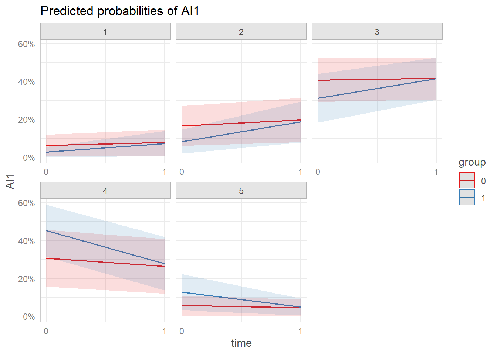
Attention Impulsiveness (AI)
AI1
Code
main.AI1 <- clmm(AI1 ~ group + time + group:time +
(1 | student), data = data, Hess=TRUE, nAGQ=7) Code
cf <- reverse_thresholds(main.AI1)
cf %>% mutate(odd_ratio = exp(Estimate)) %>%
mutate_if(is.numeric, ~ round(., 2)) Estimate Std. Error z value Pr(>|z|) odd_ratio
intercept (Y>1) 2.93 0.50 5.89 0.00 18.66
intercept (Y>2) 1.38 0.41 3.34 0.00 3.96
intercept (Y>3) -0.46 0.39 -1.17 0.24 0.63
intercept (Y>4) -2.75 0.48 -5.78 0.00 0.06
group1 0.68 0.52 1.29 0.20 1.97
time -0.16 0.40 -0.41 0.68 0.85
group1:time -0.79 0.57 -1.40 0.16 0.45Code
ggpredict(main.AI1, terms = c("time", "group")) %>% plot() +
scale_x_continuous(breaks = c(0, 1)) AI2
Code
main.AI2 <- clmm(AI2 ~ group + time + group:time +
(1 | student), data = data, Hess=TRUE, nAGQ=7) Code
cf <- reverse_thresholds(main.AI2)
cf %>% mutate(odd_ratio = exp(Estimate)) %>%
mutate_if(is.numeric, ~ round(., 2)) Estimate Std. Error z value Pr(>|z|) odd_ratio
intercept (Y>1) 2.58 0.50 5.12 0.00 13.22
intercept (Y>2) 0.20 0.42 0.48 0.63 1.23
intercept (Y>3) -1.89 0.47 -4.07 0.00 0.15
intercept (Y>4) -4.09 0.58 -7.02 0.00 0.02
group1 1.86 0.59 3.15 0.00 6.42
time 0.18 0.41 0.43 0.66 1.19
group1:time -1.24 0.58 -2.12 0.03 0.29Code
ggpredict(main.AI2, terms = c("time", "group")) %>% plot() +
scale_x_continuous(breaks = c(0, 1)) 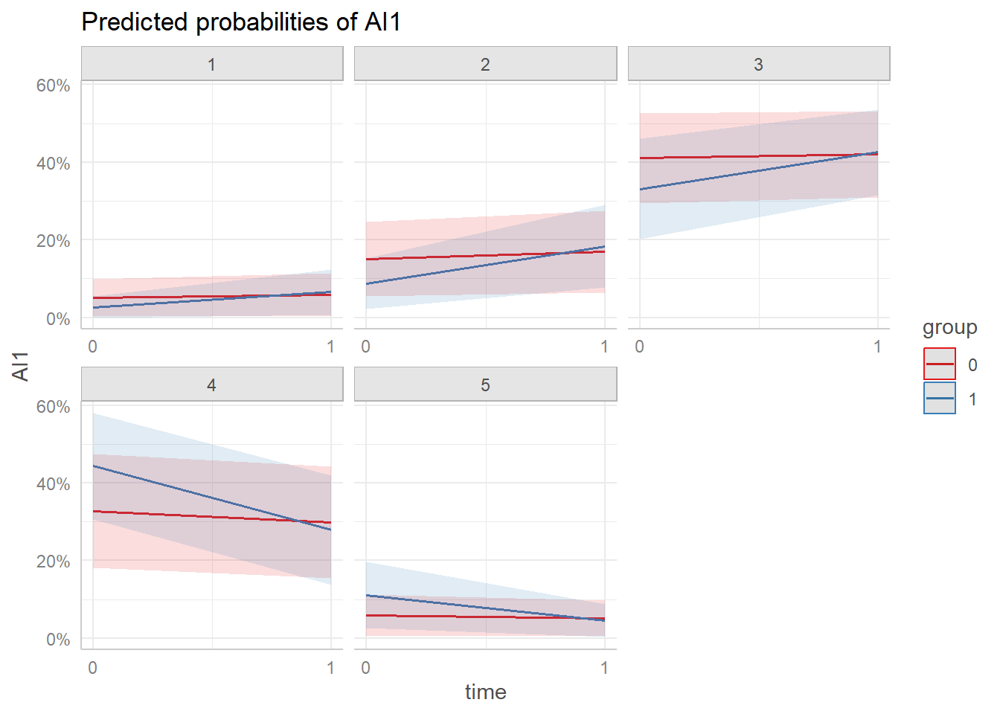
AI3
Code
main.AI3 <- clmm(AI3 ~ group + time + group:time +
(1 | student), data = data, Hess=TRUE, nAGQ=7) Code
cf <- reverse_thresholds(main.AI3)
cf %>% mutate(odd_ratio = exp(Estimate)) %>%
mutate_if(is.numeric, ~ round(., 2)) Estimate Std. Error z value Pr(>|z|) odd_ratio
intercept (Y>1) 1.14 0.50 2.28 0.02 3.12
intercept (Y>2) -1.38 0.52 -2.64 0.01 0.25
intercept (Y>3) -3.33 0.61 -5.47 0.00 0.04
intercept (Y>4) -5.25 0.74 -7.10 0.00 0.01
group1 0.87 0.66 1.33 0.18 2.39
time -0.25 0.44 -0.56 0.58 0.78
group1:time 0.51 0.60 0.84 0.40 1.66Code
ggpredict(main.AI3, terms = c("time", "group")) %>% plot() +
scale_x_continuous(breaks = c(0, 1)) 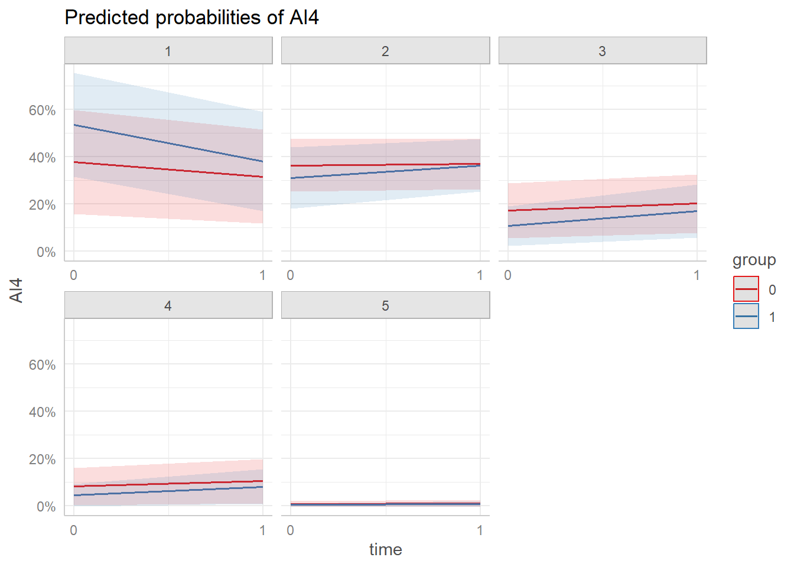
AI4
Code
main.AI4 <- clmm(AI4 ~ group + time + group:time +
(1 | student), data = data, Hess=TRUE, nAGQ=7) Code
cf <- reverse_thresholds(main.AI4)
cf %>% mutate(odd_ratio = exp(Estimate)) %>%
mutate_if(is.numeric, ~ round(., 2)) Estimate Std. Error z value Pr(>|z|) odd_ratio
intercept (Y>1) 0.53 0.46 1.15 0.25 1.69
intercept (Y>2) -1.02 0.47 -2.18 0.03 0.36
intercept (Y>3) -2.29 0.52 -4.39 0.00 0.10
intercept (Y>4) -4.60 0.74 -6.18 0.00 0.01
group1 -0.50 0.62 -0.80 0.42 0.61
time 0.35 0.44 0.79 0.43 1.41
group1:time 0.16 0.61 0.26 0.80 1.17Code
ggpredict(main.AI4, terms = c("time", "group")) %>% plot() +
scale_x_continuous(breaks = c(0, 1)) 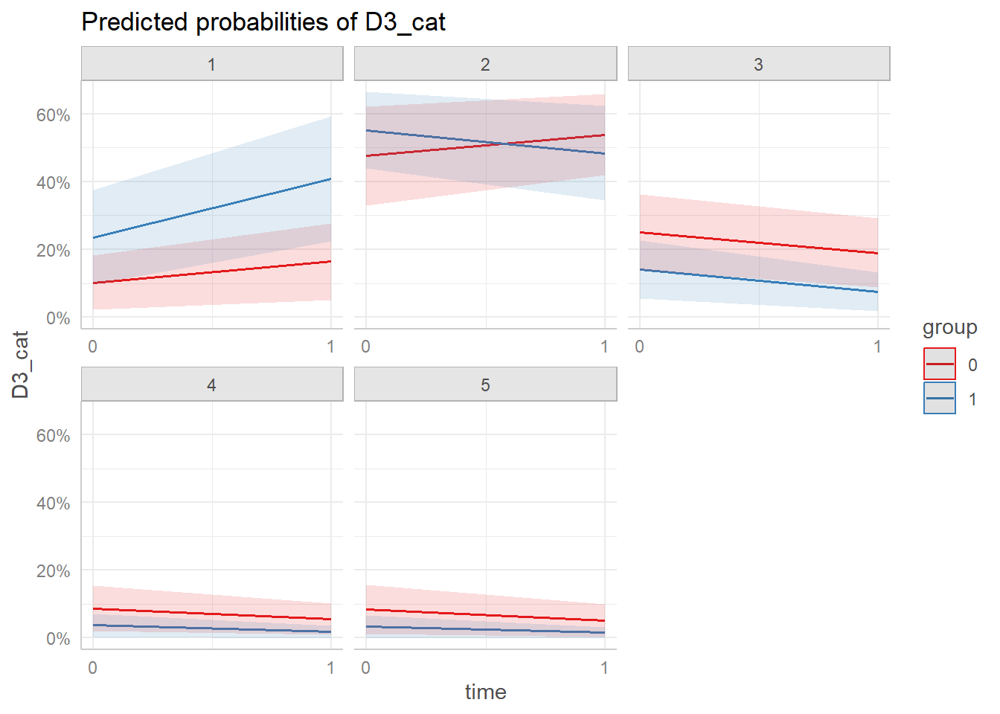
AI5
Code
main.AI5 <- clmm(AI5 ~ group + time + group:time +
(1 | student), data = data, Hess=TRUE, nAGQ=7) Code
cf <- reverse_thresholds(main.AI5)
cf %>% mutate(odd_ratio = exp(Estimate)) %>%
mutate_if(is.numeric, ~ round(., 2)) Estimate Std. Error z value Pr(>|z|) odd_ratio
intercept (Y>1) 1.19 0.41 2.88 0.00 3.28
intercept (Y>2) -0.86 0.41 -2.09 0.04 0.42
intercept (Y>3) -2.71 0.49 -5.54 0.00 0.07
intercept (Y>4) -4.59 0.64 -7.20 0.00 0.01
group1 0.84 0.54 1.56 0.12 2.32
time 0.50 0.42 1.18 0.24 1.64
group1:time -0.72 0.58 -1.24 0.21 0.49Code
ggpredict(main.AI5, terms = c("time", "group")) %>% plot() +
scale_x_continuous(breaks = c(0, 1)) 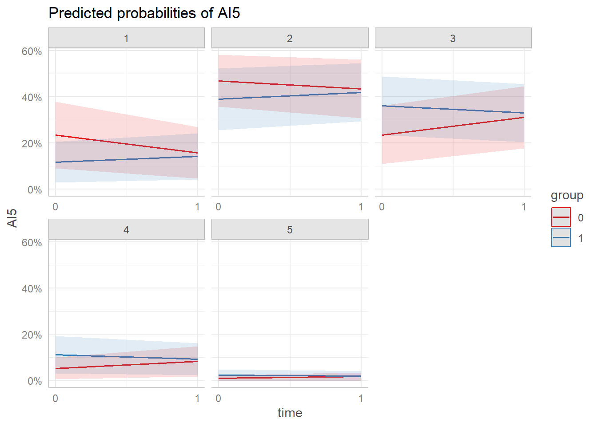
Online Vigilance (OV)
OV1
Code
main.OV1 <- clmm(OV1 ~ group + time + group:time +
(1 | student), data = data, Hess=TRUE, nAGQ=7) Code
cf <- reverse_thresholds(main.OV1)
cf %>% mutate(odd_ratio = exp(Estimate)) %>%
mutate_if(is.numeric, ~ round(., 2)) Estimate Std. Error z value Pr(>|z|) odd_ratio
intercept (Y>1) 0.61 0.49 1.25 0.21 1.84
intercept (Y>2) -0.93 0.50 -1.85 0.06 0.39
intercept (Y>3) -2.47 0.56 -4.44 0.00 0.08
intercept (Y>4) -4.24 0.66 -6.40 0.00 0.01
group1 0.41 0.65 0.64 0.52 1.51
time -0.15 0.45 -0.34 0.74 0.86
group1:time 0.53 0.61 0.87 0.38 1.70Code
ggpredict(main.OV1, terms = c("time", "group")) %>% plot() +
scale_x_continuous(breaks = c(0, 1)) 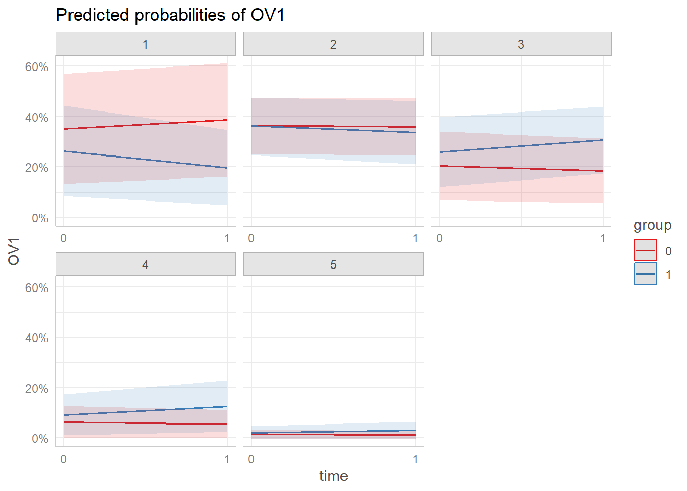
OV2
Code
main.OV2 <- clmm(OV2 ~ group + time + group:time +
(1 | student), data = data, Hess=TRUE, nAGQ=7) Code
cf <- reverse_thresholds(main.OV2)
cf %>% mutate(odd_ratio = exp(Estimate)) %>%
mutate_if(is.numeric, ~ round(., 2)) Estimate Std. Error z value Pr(>|z|) odd_ratio
intercept (Y>1) 1.44 0.59 2.41 0.02 4.20
intercept (Y>2) -0.66 0.59 -1.11 0.27 0.52
intercept (Y>3) -2.99 0.67 -4.49 0.00 0.05
intercept (Y>4) -5.80 0.86 -6.74 0.00 0.00
group1 0.53 0.78 0.67 0.50 1.69
time 0.37 0.45 0.83 0.41 1.45
group1:time 0.33 0.62 0.53 0.59 1.39Code
ggpredict(main.OV2, terms = c("time", "group")) %>% plot() +
scale_x_continuous(breaks = c(0, 1)) 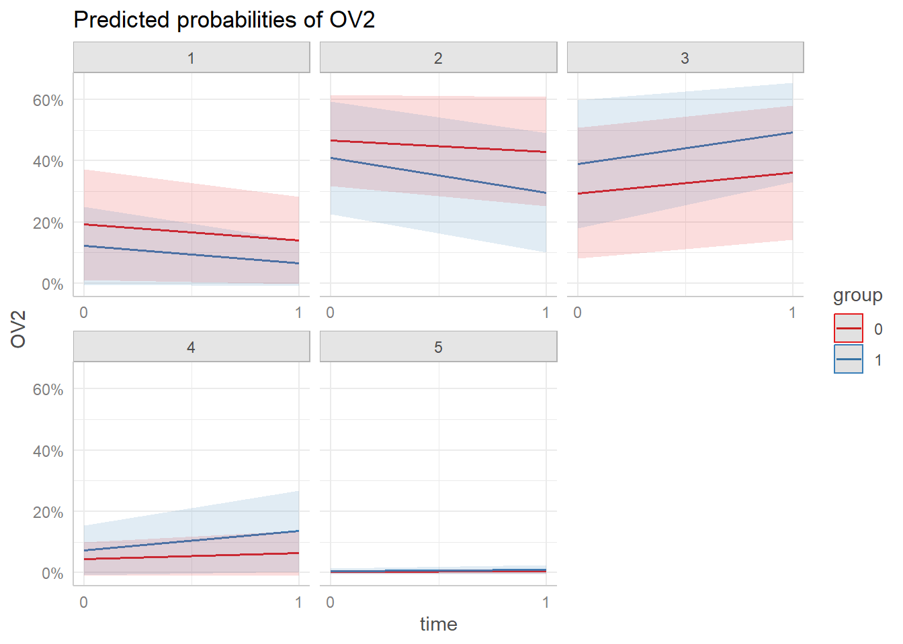
OV3
Code
main.OV3 <- clmm(OV3 ~ group + time + group:time +
(1 | student), data = data, Hess=TRUE, nAGQ=7) Code
cf <- reverse_thresholds(main.OV3)
cf %>% mutate(odd_ratio = exp(Estimate)) %>%
mutate_if(is.numeric, ~ round(., 2)) Estimate Std. Error z value Pr(>|z|) odd_ratio
intercept (Y>1) -2.42 0.66 -3.65 0.00 0.09
intercept (Y>2) -3.63 0.77 -4.73 0.00 0.03
intercept (Y>3) -4.80 0.90 -5.32 0.00 0.01
intercept (Y>4) -6.87 1.25 -5.51 0.00 0.00
group1 0.65 0.77 0.85 0.39 1.92
time -0.12 0.63 -0.19 0.85 0.89
group1:time 0.59 0.83 0.71 0.48 1.81Code
ggpredict(main.OV3, terms = c("time", "group")) %>% plot() +
scale_x_continuous(breaks = c(0, 1)) 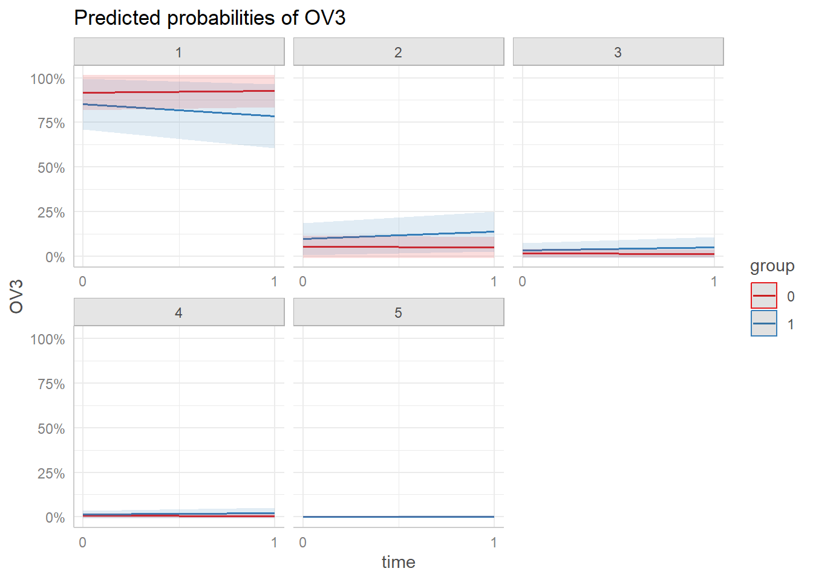
Multitasking (MT)
MT1
Code
main.MT1 <- clmm(MT1 ~ group + time + group:time +
(1 | student), data = data, Hess=TRUE, nAGQ=7) Code
cf <- reverse_thresholds(main.MT1)
cf %>% mutate(odd_ratio = exp(Estimate)) %>%
mutate_if(is.numeric, ~ round(., 2)) Estimate Std. Error z value Pr(>|z|) odd_ratio
intercept (Y>1) 1.79 0.44 4.11 0.00 6.01
intercept (Y>2) -0.07 0.40 -0.17 0.86 0.93
intercept (Y>3) -1.61 0.43 -3.72 0.00 0.20
intercept (Y>4) -3.52 0.56 -6.31 0.00 0.03
group1 0.36 0.53 0.68 0.50 1.44
time 0.28 0.41 0.68 0.50 1.32
group1:time -0.70 0.57 -1.23 0.22 0.50Code
ggpredict(main.MT1, terms = c("time", "group")) %>% plot() +
scale_x_continuous(breaks = c(0, 1)) 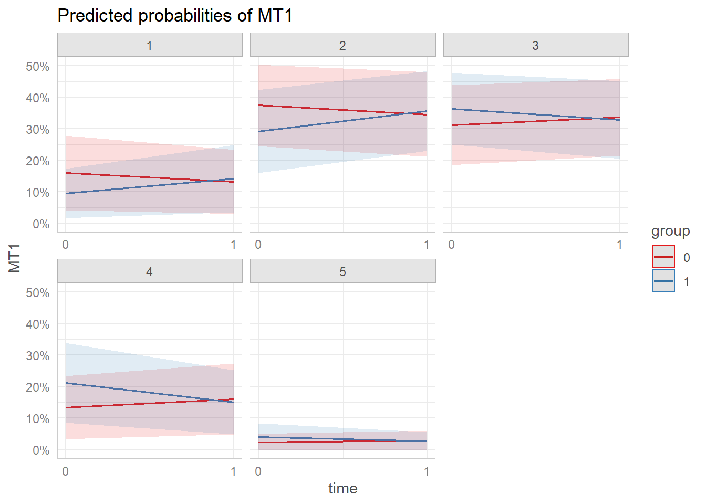
MT2
Code
main.MT2 <- clmm(MT2 ~ group + time + group:time +
(1 | student), data = data, Hess=TRUE, nAGQ=7) Code
cf <- reverse_thresholds(main.MT2)
cf %>% mutate(odd_ratio = exp(Estimate)) %>%
mutate_if(is.numeric, ~ round(., 2)) Estimate Std. Error z value Pr(>|z|) odd_ratio
intercept (Y>1) 4.27 0.69 6.18 0.00 71.34
intercept (Y>2) 2.59 0.60 4.34 0.00 13.32
intercept (Y>3) 0.33 0.53 0.61 0.54 1.38
intercept (Y>4) -2.63 0.59 -4.48 0.00 0.07
group1 -0.71 0.70 -1.02 0.31 0.49
time 0.06 0.44 0.14 0.89 1.06
group1:time 0.19 0.60 0.31 0.75 1.21Code
ggpredict(main.MT2, terms = c("time", "group")) %>% plot() +
scale_x_continuous(breaks = c(0, 1)) 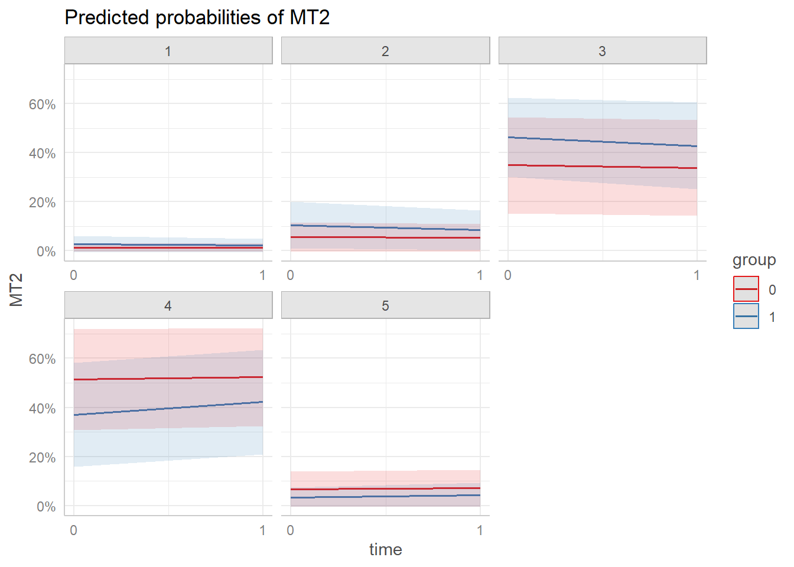
MT3
Code
main.MT3 <- clmm(MT3 ~ group + time + group:time +
(1 | student), data = data, Hess=TRUE, nAGQ=7) Code
cf <- reverse_thresholds(main.MT3)
cf %>% mutate(odd_ratio = exp(Estimate)) %>%
mutate_if(is.numeric, ~ round(., 2)) Estimate Std. Error z value Pr(>|z|) odd_ratio
intercept (Y>1) 1.45 0.45 3.24 0.00 4.27
intercept (Y>2) 0.07 0.43 0.16 0.87 1.07
intercept (Y>3) -1.63 0.46 -3.52 0.00 0.20
intercept (Y>4) -3.56 0.56 -6.31 0.00 0.03
group1 0.27 0.57 0.48 0.63 1.32
time 0.71 0.41 1.74 0.08 2.04
group1:time -0.50 0.57 -0.88 0.38 0.60Code
ggpredict(main.MT3, terms = c("time", "group")) %>% plot() +
scale_x_continuous(breaks = c(0, 1)) 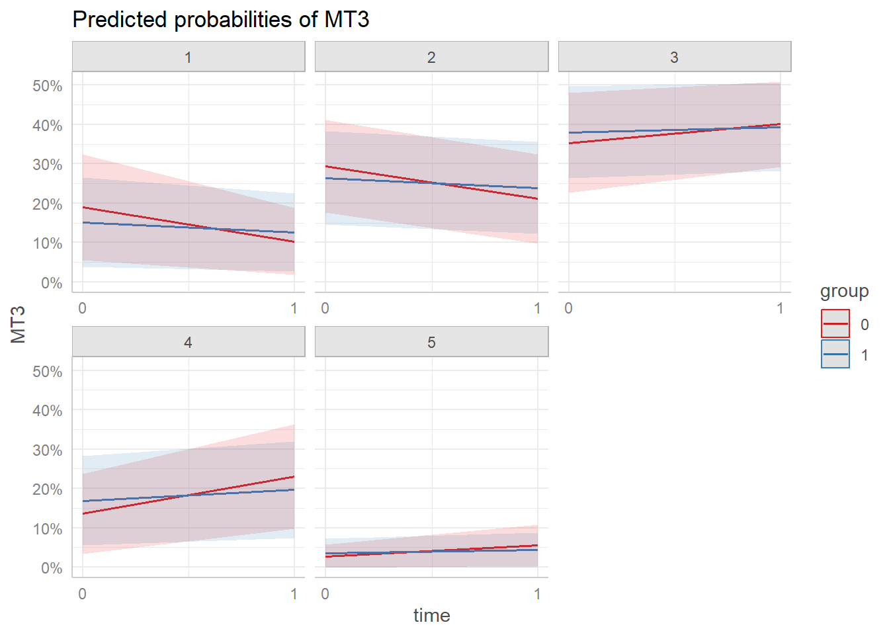
MT4
Code
main.MT4 <- clmm(MT4 ~ group + time + group:time +
(1 | student), data = data, Hess=TRUE, nAGQ=7) Code
cf <- reverse_thresholds(main.MT4)
cf %>% mutate(odd_ratio = exp(Estimate)) %>%
mutate_if(is.numeric, ~ round(., 2)) Estimate Std. Error z value Pr(>|z|) odd_ratio
intercept (Y>1) 2.72 0.45 6.11 0.00 15.24
intercept (Y>2) 1.01 0.37 2.73 0.01 2.75
intercept (Y>3) -0.74 0.36 -2.03 0.04 0.48
intercept (Y>4) -2.49 0.44 -5.64 0.00 0.08
group1 -0.38 0.47 -0.81 0.42 0.69
time -0.12 0.40 -0.31 0.76 0.88
group1:time 0.64 0.55 1.16 0.25 1.90Code
ggpredict(main.MT4, terms = c("time", "group")) %>% plot() +
scale_x_continuous(breaks = c(0, 1)) 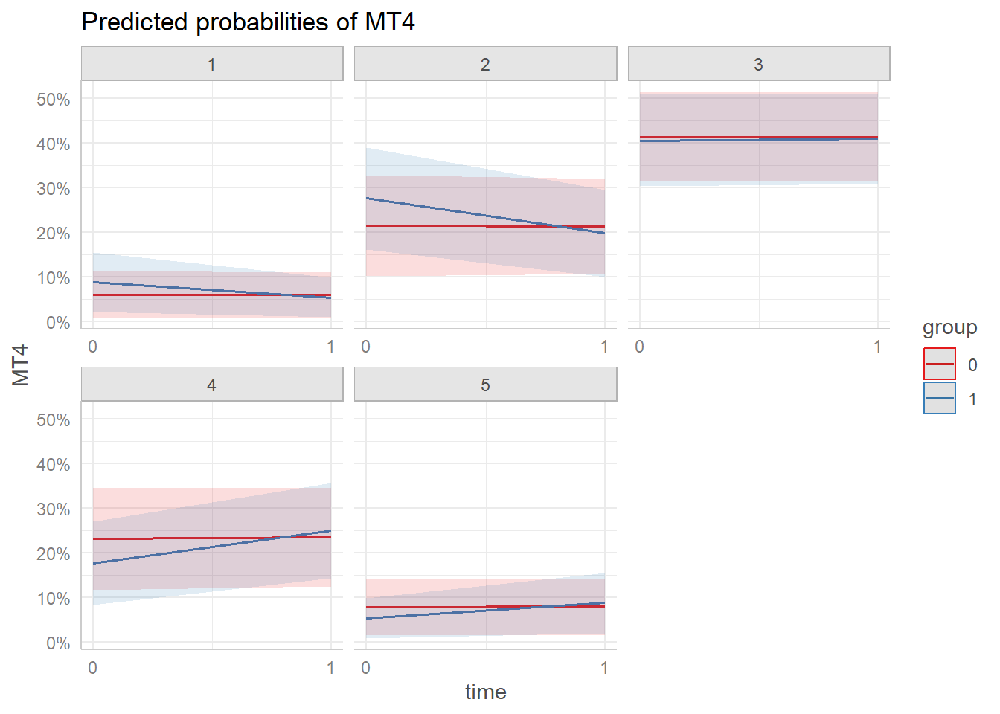
Emotion Regulation (ER)
ER1
Code
main.ER1 <- clmm(ER1 ~ group + time + group:time +
(1 | student), data = data, Hess=TRUE, nAGQ=7) Code
cf <- reverse_thresholds(main.ER1)
cf %>% mutate(odd_ratio = exp(Estimate)) %>%
mutate_if(is.numeric, ~ round(., 2)) Estimate Std. Error z value Pr(>|z|) odd_ratio
intercept (Y>1) 2.38 0.42 5.62 0.00 10.84
intercept (Y>2) 1.40 0.38 3.67 0.00 4.04
intercept (Y>3) 0.00 0.35 -0.01 0.99 1.00
intercept (Y>4) -1.68 0.40 -4.22 0.00 0.19
group1 -0.33 0.48 -0.69 0.49 0.72
time -0.16 0.40 -0.41 0.68 0.85
group1:time -0.01 0.55 -0.01 0.99 0.99Code
ggpredict(main.ER1, terms = c("time", "group")) %>% plot() +
scale_x_continuous(breaks = c(0, 1)) 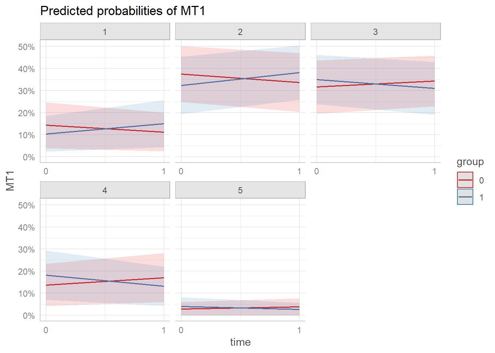
ER2
Code
main.ER2 <- clmm(ER2 ~ group + time + group:time +
(1 | student), data = data, Hess=TRUE, nAGQ=7) Code
cf <- reverse_thresholds(main.ER2)
cf %>% mutate(odd_ratio = exp(Estimate)) %>%
mutate_if(is.numeric, ~ round(., 2)) Estimate Std. Error z value Pr(>|z|) odd_ratio
intercept (Y>1) 2.01 0.50 4.03 0.00 7.45
intercept (Y>2) 0.79 0.47 1.69 0.09 2.20
intercept (Y>3) -0.62 0.47 -1.33 0.18 0.54
intercept (Y>4) -2.43 0.52 -4.64 0.00 0.09
group1 0.11 0.61 0.17 0.86 1.11
time -0.05 0.42 -0.11 0.91 0.95
group1:time -0.01 0.58 -0.02 0.99 0.99Code
ggpredict(main.ER2, terms = c("time", "group")) %>% plot() +
scale_x_continuous(breaks = c(0, 1)) 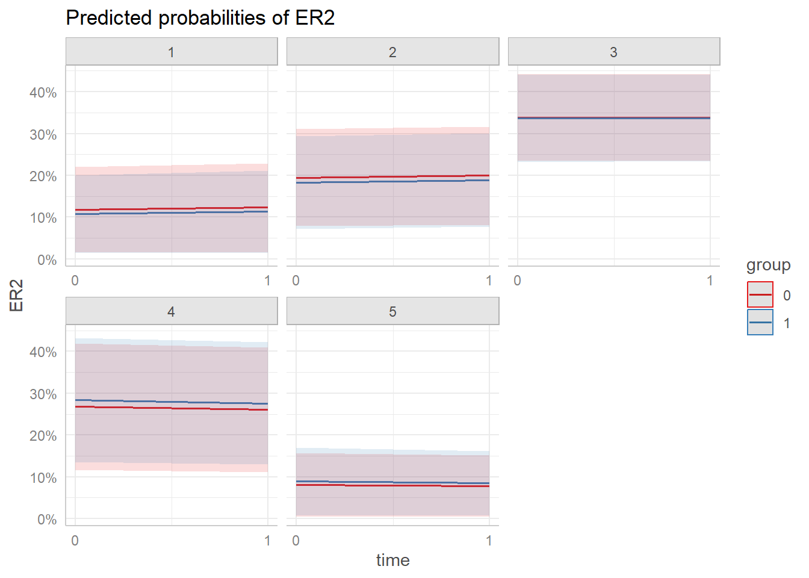
ER3
Code
main.ER3 <- clmm(ER3 ~ group + time + group:time +
(1 | student), data = data, Hess=TRUE, nAGQ=7) Code
cf <- reverse_thresholds(main.ER3)
cf %>% mutate(odd_ratio = exp(Estimate)) %>%
mutate_if(is.numeric, ~ round(., 2)) Estimate Std. Error z value Pr(>|z|) odd_ratio
intercept (Y>1) 2.81 0.50 5.62 0.00 16.56
intercept (Y>2) 1.44 0.45 3.21 0.00 4.20
intercept (Y>3) 0.09 0.43 0.20 0.84 1.09
intercept (Y>4) -2.51 0.50 -5.00 0.00 0.08
group1 -0.33 0.56 -0.59 0.56 0.72
time -0.21 0.41 -0.51 0.61 0.81
group1:time 0.49 0.57 0.86 0.39 1.63Code
ggpredict(main.ER3, terms = c("time", "group")) %>% plot() +
scale_x_continuous(breaks = c(0, 1)) 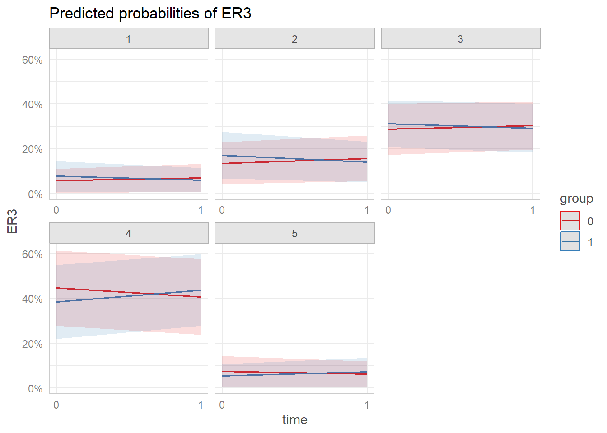
ER4
Code
main.ER4 <- clmm(ER4 ~ group + time + group:time +
(1 | student), data = data, Hess=TRUE, nAGQ=7) Code
cf <- reverse_thresholds(main.ER4)
cf %>% mutate(odd_ratio = exp(Estimate)) %>%
mutate_if(is.numeric, ~ round(., 2)) Estimate Std. Error z value Pr(>|z|) odd_ratio
intercept (Y>1) 1.69 0.49 3.43 0.00 5.43
intercept (Y>2) 0.55 0.46 1.19 0.24 1.73
intercept (Y>3) -1.08 0.47 -2.29 0.02 0.34
intercept (Y>4) -3.04 0.55 -5.57 0.00 0.05
group1 1.14 0.62 1.82 0.07 3.11
time 0.88 0.43 2.06 0.04 2.40
group1:time -0.71 0.59 -1.21 0.22 0.49Code
ggpredict(main.ER4, terms = c("time", "group")) %>% plot() +
scale_x_continuous(breaks = c(0, 1))